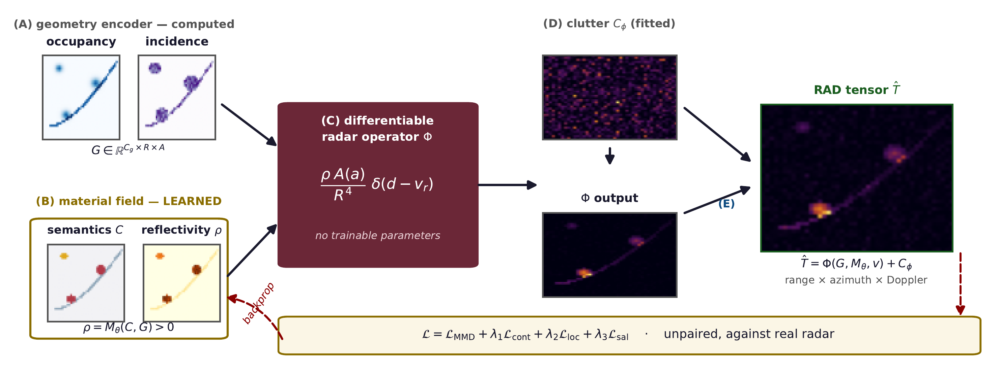
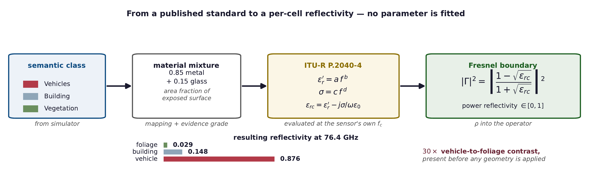
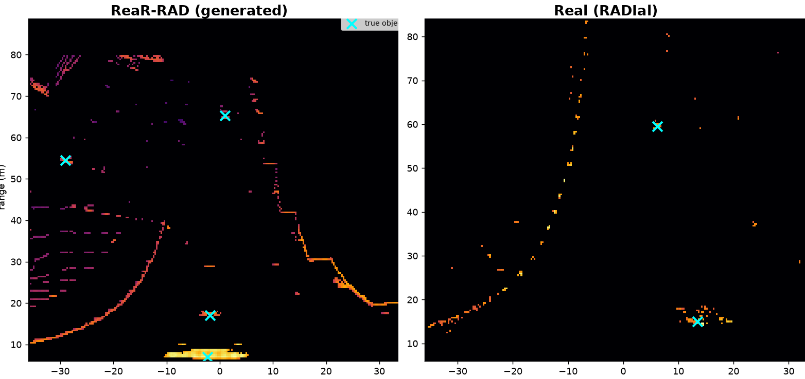
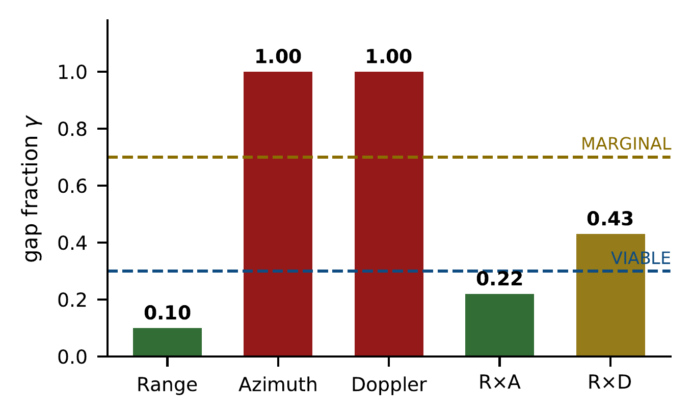
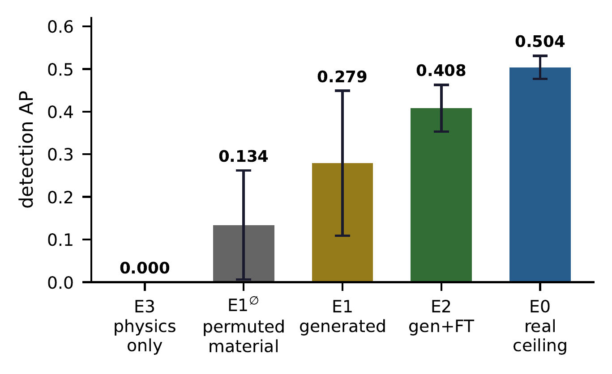

Overview
Millimetre‑wave radar is essential for autonomous driving in adverse weather, yet remains the least faithfully simulated sensor — its returns depend on material properties that no purely geometric model captures. ReaR‑RAD generates realistic range–azimuth–Doppler (RAD) radar tensors directly from a simulator's existing LiDAR geometry, semantics, and motion, without requiring an explicit radar sensor model. The one quantity physics cannot compute — material reflectivity — is supplied either by a learned material field or, with zero fitted parameters, computed directly from ITU‑R P.2040‑4 electromagnetic properties at the sensor's own carrier frequency. Everything else remains exact radar physics, trained against real radar in a fully unpaired setting.
Identical geometry, different radar return — the observation that motivates the whole framework. What LiDAR and cameras cannot reveal about a surface's material, a simulator already knows.
Highlights
No Radar Model Required
Drops into any simulator that already exposes LiDAR geometry, semantics, and motion — nothing else to author or calibrate.
Only One Thing is Learned
Range attenuation, antenna response and Doppler stay exact physics — only material reflectivity is learned, and injected from the simulator.
Trained Fully Unpaired
Matches real radar statistics through distributional, content, localisation and saliency terms — no paired sim–real observation ever exists.
Real Material Physics
Reflectivity computed from ITU‑R P.2040‑4 permittivity at the sensor's own carrier — zero fitted parameters, fully auditable.
Validated Downstream
Evaluated with detectors designed natively for radar tensors — RODNet and RTNH — not architectures repurposed from other modalities.
Method
How It Works
Everything computable is computed; learning is confined to the single quantity geometry and appearance provably cannot reveal.

Geometry is deterministically binned and lightly refined; the learned material field converts semantics into reflectivity; a differentiable radar operator — with no trainable parameters of its own — applies exact physics; a fitted clutter process completes the tensor. Gradients from an unpaired objective flow back only into the material field.
Compute geometry
LiDAR → occupancy, incidence angle. Deterministic, no learning.
Learn material
Semantic class + geometry → reflectivity ρ. The only learned part.
Apply physics
Range, antenna gain, Doppler combine ρ into a RAD tensor — exactly.
Material Physics
Reflectivity You Can Audit
The one quantity physics cannot compute need not be invented either. Every surface receives its measured electromagnetic reflection coefficient, from an international standard.

A semantic class becomes an area‑fraction mixture of exposed surfaces; ITU‑R P.2040‑4 supplies each constituent's permittivity and conductivity at the sensor's own carrier; the Fresnel boundary condition converts these into a power reflection coefficient. No parameter is fitted.
ITU‑R P.2040‑4
εr′ = a f b σ = c f d
Fresnel boundary
|Γ|2 = |(1−√εrc) / (1+√εrc)|2
Material database — excerpt, evaluated at 76.4 GHz
| Class | Surface mixture | εr′ | σ (S/m) | |Γ|2 |
|---|---|---|---|---|
| GuardRail | 1.00 metal | 1.000 | 107 | 0.998 |
| Vehicles | 0.85 metal + 0.15 glass | 1.796 | 8.5×106 | 0.876 |
| Pole | 0.70 metal + 0.30 concrete | 2.272 | 7.0×106 | 0.745 |
| Fence | 0.50 wood + 0.50 metal | 1.495 | 5.0×106 | 0.514 |
| Building | 0.70 concrete + 0.20 brick | 5.081 | 1.091 | 0.148 |
| Ground | 1.00 asphalt | 4.830 | 4.615 | 0.147 |
| Wall | 0.50 concrete + 0.50 brick | 4.575 | 0.710 | 0.131 |
| Vegetation | 1.00 wood | 1.990 | 0.491 | 0.029 |
itu‑direct extrapolated proxy assumed — every mapping carries its distance from a measured fact
before any geometry
beats its permutation null
and zero runtime cost
Results
What It Achieves

Generated (left) vs. real (right) RAD tensors on identical axes. Object returns coincide with true positions; extended roadside structure is reproduced.
distributional gap
(viable regime)
training on 40 real frames
zero collapsed runs
permuted material
non‑overlapping intervals
vs. 0.976 for
real radar itself


Citation
BibTeX
@article{anand2026rearrad,
title = {{ReaR-RAD}: Physics-Guided Learning of Realistic Radar
{RAD} Tensors for Simulators Without an Explicit
Radar Sensor Model},
author = {Anand, Vivek and Lohani, Bharat and Mishra, Rakesh},
journal = {IEEE Robotics and Automation Letters},
year = {2026},
note = {Under review}
}